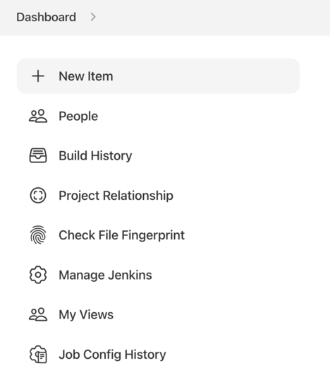
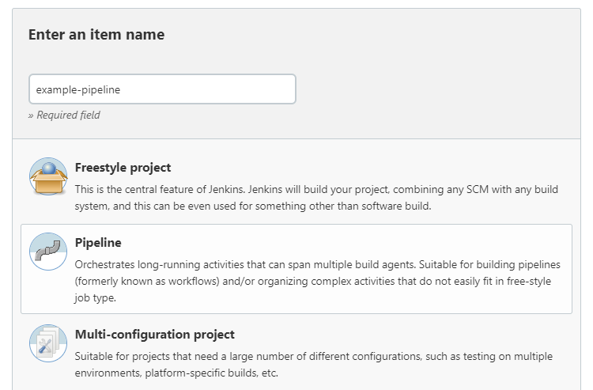
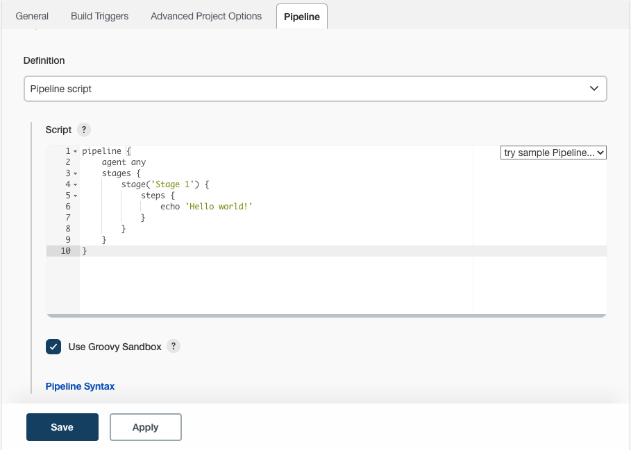
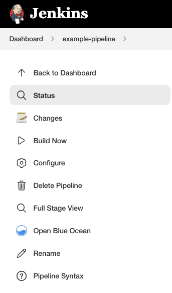
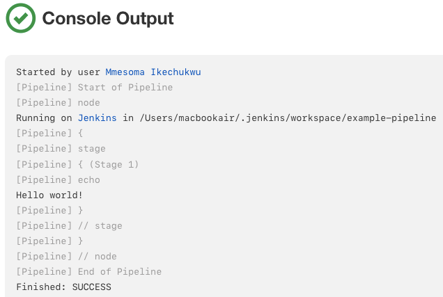
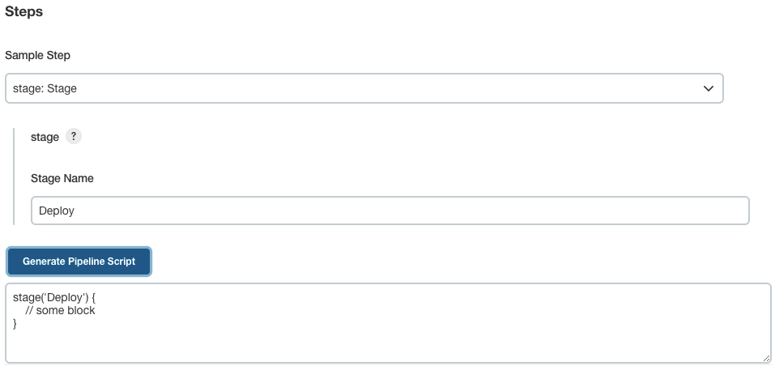

Getting started with Pipeline
|
This site is the new docs site currently being tested. For the actual docs in use please go to https://www.jenkins.io/doc. |
As mentioned previously, Jenkins Pipeline is a suite of plugins that supports implementing and integrating continuous delivery pipelines into Jenkins. Pipeline provides an extensible set of tools for modeling simple-to-complex delivery pipelines "as code" via the Pipeline DSL. [1]
This section describes how to get started with creating your Pipeline project in
Jenkins and introduces you to the various ways that a Jenkinsfile can be
created and stored.
Prerequisites
To use Jenkins Pipeline, you will need:
-
Jenkins 2.x or later (older versions back to 1.642.3 may work but are not recommended)
-
Pipeline plugin, [2] which is installed as part of the "suggested plugins" (specified when running through the Post-installation setup wizard after installing Jenkins).
Read more about how to install and manage plugins in Managing Plugins.
Defining a Pipeline
Both Declarative and Scripted Pipeline are DSLs [1] to describe portions of your software delivery pipeline. Scripted Pipeline is written in a limited form of Groovy syntax.
Relevant components of Groovy syntax will be introduced as required throughout this documentation, so while an understanding of Groovy is helpful, it is not required to work with Pipeline.
A Pipeline can be created in one of the following ways:
-
[through-blue-ocean] - after setting up a Pipeline project in Blue Ocean, the Blue Ocean UI helps you write your Pipeline’s
Jenkinsfileand commit it to source control. -
[through-the-classic-ui] - you can enter a basic Pipeline directly in Jenkins through the classic UI.
-
In SCM - you can write a
Jenkinsfilemanually, which you can commit to your project’s source control repository. [3]
The syntax for defining a Pipeline with either approach is the same, but while
Jenkins supports entering Pipeline directly into the classic UI, it is
generally considered best practice to define the Pipeline in a Jenkinsfile
which Jenkins will then load directly from source control.
This video provides basic instructions on how to write both Declarative and Scripted Pipelines.
Through Blue Ocean
If you are new to Jenkins Pipeline, the Blue Ocean UI helps you
set up your Pipeline project, and
automatically creates and writes your Pipeline (i.e. the Jenkinsfile) for you
through the graphical Pipeline editor.
As part of setting up your Pipeline project in Blue Ocean, Jenkins configures a
secure and appropriately authenticated connection to your project’s source
control repository. Therefore, any changes you make to the Jenkinsfile via
Blue Ocean’s Pipeline editor are automatically saved and committed to source
control.
Read more about Blue Ocean in the Blue Ocean chapter and Getting started with Blue Ocean page.
include::user-docs:blueocean:partial$_blue-ocean-status.adoc
Through the classic UI
A Jenkinsfile created using the classic UI is stored by Jenkins itself (within
the Jenkins home directory).
To create a basic Pipeline through the Jenkins classic UI:
-
If required, ensure you are logged in to Jenkins.
-
From the Jenkins home page (i.e. the Dashboard of the Jenkins classic UI), click New Item at the top left.

-
In the Enter an item name field, specify the name for your new Pipeline project.
Caution: Jenkins uses this item name to create directories on disk. It is recommended to avoid using spaces in item names, since doing so may uncover bugs in scripts that do not properly handle spaces in directory paths. -
Scroll down and click Pipeline, then click OK at the end of the page to open the Pipeline configuration page (whose General tab is selected).
Pipeline and then click OK" width="100%">
-
Click the Pipeline tab at the top of the page to scroll down to the Pipeline section.
Note: If instead you are defining yourJenkinsfilein source control, follow the instructions in In SCM below. -
In the Pipeline section, ensure that the Definition field indicates the Pipeline script option.
-
Enter your Pipeline code into the Script text area.
For instance, copy the following Declarative example Pipeline code (below the Jenkinsfile ( … ) heading) or its Scripted version equivalent and paste this into the Script text area. (The Declarative example below is used throughout the remainder of this procedure.)// Declarative // pipeline { agent any (1) stages { stage('Stage 1') { steps { echo 'Hello world!' (2) } } } } // Script // node { (3) stage('Stage 1') { echo 'Hello World' (2) } }1 agentinstructs Jenkins to allocate an executor (on any available agent/node in the Jenkins environment) and workspace for the entire Pipeline.2 echowrites simple string in the console output.3 nodeeffectively does the same asagent(above).
Note: You can also select from canned Scripted Pipeline examples from the try sample Pipeline option at the top right of the Script text area. Be aware that there are no canned Declarative Pipeline examples available from this field.
-
Click Save to open the Pipeline project/item view page.
-
On this page, click Build Now on the left to run the Pipeline.

-
Under Build History on the left, click #1 to access the details for this particular Pipeline run.
-
Click Console Output to see the full output from the Pipeline run. The following output shows a successful run of your Pipeline.
Console Output for the Pipeline" width="70%">
Notes:
-
You can also access the console output directly from the Dashboard by clicking the colored globe to the left of the build number (e.g. #1).
-
Defining a Pipeline through the classic UI is convenient for testing Pipeline code snippets, or for handling simple Pipelines or Pipelines that do not require source code to be checked out/cloned from a repository. As mentioned above, unlike
Jenkinsfiles you define through Blue Ocean (above) or in source control (below),Jenkinsfiles entered into the Script text area area of Pipeline projects are stored by Jenkins itself, within the Jenkins home directory. Therefore, for greater control and flexibility over your Pipeline, particularly for projects in source control that are likely to gain complexity, it is recommended that you use Blue Ocean or source control to define yourJenkinsfile.
-
In SCM
Complex Pipelines are difficult to write and maintain within the classic UI’s Script text area of the Pipeline configuration page.
To make this easier, your Pipeline’s Jenkinsfile can be written in a text
editor or integrated development environment (IDE) and committed to source
control [3] (optionally with the application code that Jenkins
will build). Jenkins can then check out your Jenkinsfile from source control
as part of your Pipeline project’s build process and then proceed to execute
your Pipeline.
To configure your Pipeline project to use a Jenkinsfile from source control:
-
Follow the procedure above for defining your Pipeline through the classic UI until you reach step 5 (accessing the Pipeline section on the Pipeline configuration page).
-
From the Definition field, choose the Pipeline script from SCM option.
-
From the SCM field, choose the type of source control system of the repository containing your
Jenkinsfile. -
Complete the fields specific to your repository’s source control system.
Tip: If you are uncertain of what value to specify for a given field, click its ? icon to the right for more information. -
In the Script Path field, specify the location (and name) of your
Jenkinsfile. This location is the one that Jenkins checks out/clones the repository containing yourJenkinsfile, which should match that of the repository’s file structure. The default value of this field assumes that yourJenkinsfileis named "Jenkinsfile" and is located at the root of the repository.
When you update the designated repository, a new build is triggered, as long as the Pipeline is configured with an SCM polling trigger.
|
Since Pipeline code (i.e. Scripted Pipeline in particular) is written in
Groovy-like syntax, if your IDE is not correctly syntax highlighting your
|
Built-in Documentation
Pipeline ships with built-in documentation features to make it easier to create Pipelines of varying complexities. This built-in documentation is automatically generated and updated based on the plugins installed in the Jenkins instance.
The built-in documentation can be found globally at ${YOUR_JENKINS_URL}/pipeline-syntax.
The same documentation is also linked as Pipeline Syntax in the side-bar for any
configured Pipeline project.
Snippet Generator
The built-in "Snippet Generator" utility is helpful for creating bits of code for individual steps, discovering new steps provided by plugins, or experimenting with different parameters for a particular step.
The Snippet Generator is dynamically populated with a list of the steps available to the Jenkins instance. The number of steps available is dependent on the plugins installed which explicitly expose steps for use in Pipeline.
To generate a step snippet with the Snippet Generator:
-
Navigate to the Pipeline Syntax link (referenced above) from a configured Pipeline, or at
${YOUR_JENKINS_URL}/pipeline-syntax. -
Select the desired step in the Sample Step dropdown menu
-
Use the dynamically populated area below the Sample Step dropdown to configure the selected step.
-
Click Generate Pipeline Script to create a snippet of Pipeline which can be copied and pasted into a Pipeline.

To access additional information and/or documentation about the step selected, click on the help icon (indicated by the red arrow in the image above).
Global Variable Reference
In addition to the Snippet Generator, which only surfaces steps, Pipeline also provides a built-in "Global Variable Reference." Like the Snippet Generator, it is also dynamically populated by plugins. Unlike the Snippet Generator however, the Global Variable Reference only contains documentation for variables provided by Pipeline or plugins, which are available for Pipelines.
The variables provided by default in Pipeline are:
- env
-
Exposes environment variables, for example:
env.PATHorenv.BUILD_ID. Consult the built-in global variable reference at${YOUR_JENKINS_URL}/pipeline-syntax/globals#envfor a complete, and up to date, list of environment variables available in Pipeline. - params
-
Exposes all parameters defined for the Pipeline as a read-only Map, for example:
params.MY_PARAM_NAME. - currentBuild
-
May be used to discover information about the currently executing Pipeline, with properties such as
currentBuild.result,currentBuild.displayName, etc. Consult the built-in global variable reference at${YOUR_JENKINS_URL}/pipeline-syntax/globalsfor a complete, and up to date, list of properties available oncurrentBuild.
This video reviews using the currentBuild variable in Jenkins Pipeline.
Declarative Directive Generator
While the Snippet Generator helps with generating steps for a Scripted
Pipeline or for the steps block in a stage in a Declarative Pipeline, it
does not cover the sections and
directives used to define a Declarative Pipeline.
The "Declarative Directive Generator" utility helps with that.
Similar to the Snippet Generator, the Directive Generator allows you
to choose a Declarative directive, configure it in a form, and generate the
configuration for that directive, which you can then use in your Declarative Pipeline.
To generate a Declarative directive using the Declarative Directive Generator:
-
Navigate to the Pipeline Syntax link (referenced above) from a configured Pipeline, and then click on the Declarative Directive Generator link in the sidepanel, or go directly to
${YOUR_JENKINS_URL}/directive-generator. -
Select the desired directive in the dropdown menu
-
Use the dynamically populated area below the dropdown to configure the selected directive.
-
Click Generate Directive to create the directive’s configuration to copy into your Pipeline.
The Directive Generator can generate configuration for nested directives,
such as conditions inside a when directive, but it cannot generate Pipeline steps.
For the contents of directives which contain steps,
such as steps inside a stage or conditions like always or failure inside post,
the Directive Generator adds a placeholder comment instead.
You will still need to add steps to your Pipeline by hand.
// Declarative //
stage('Stage 1') {
steps {
// One or more steps need to be included within the steps block.
}
}
// Script //
Further Reading
This section merely scratches the surface of what can be done with Jenkins Pipeline, but should provide enough of a foundation for you to start experimenting with a test Jenkins instance.
In the next section, The Jenkinsfile, more Pipeline steps will be discussed along with patterns for implementing successful, real-world, Jenkins Pipelines.
Additional Resources
-
Pipeline Steps Reference, encompassing all steps provided by plugins distributed in the Jenkins Update Center.
-
Pipeline Examples, a community-curated collection of copyable Pipeline examples.